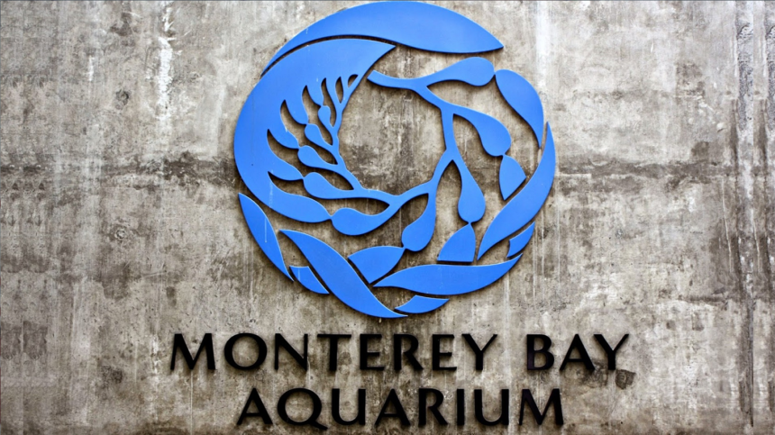

Learn More About Monterey Bay Aquarium MBA Website Sea Otter Program History Monterey Bay Aquarium Marine Conservation 
Learn More About Sea Otters Southern Sea Otter Facts Meet MBA's Sea Otter Family Watch the Live Cam of the Monterey Bay Aquarium Sea Otters